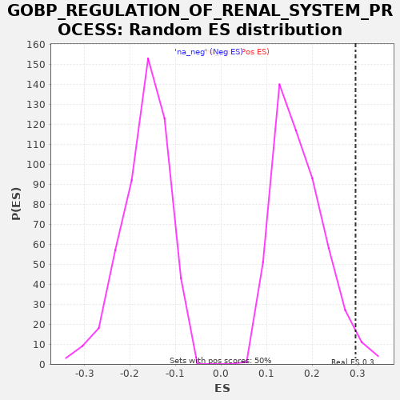

| | | Dataset | A_X_tradeoff |
| Phenotype | NoPhenotypeAvailable |
| Upregulated in class | na_pos |
| GeneSet | GOBP_REGULATION_OF_RENAL_SYSTEM_PROCESS |
| Enrichment Score (ES) | 0.29542184 |
| Normalized Enrichment Score (NES) | 1.7135763 |
| Nominal p-value | 0.025896415 |
| FDR q-value | 0.6219151 |
| FWER p-Value | 1.0 |
Table: GSEA Results Summary
 Fig 1: Enrichment plot: GOBP_REGULATION_OF_RENAL_SYSTEM_PROCESS
Fig 1: Enrichment plot: GOBP_REGULATION_OF_RENAL_SYSTEM_PROCESS
Profile of the Running ES Score & Positions of GeneSet Members on the Rank Ordered List
| SYMBOL | RANK IN GENE LIST | RANK METRIC SCORE | RUNNING ES | CORE ENRICHMENT | | 1 | ADIPOQ | 487 | -0.003 | 0.0166 | Yes |
| 2 | SPX | 921 | -0.005 | 0.0360 | Yes |
| 3 | ADORA1 | 1867 | -0.010 | 0.0290 | Yes |
| 4 | AGT | 2017 | -0.011 | 0.0630 | Yes |
| 5 | OXT | 2684 | -0.015 | 0.0704 | Yes |
| 6 | NPR1 | 3008 | -0.017 | 0.0954 | Yes |
| 7 | INPP5K | 3266 | -0.019 | 0.1239 | Yes |
| 8 | NPPB | 3792 | -0.023 | 0.1385 | Yes |
| 9 | EDN1 | 3894 | -0.024 | 0.1750 | Yes |
| 10 | AVPR1A | 4591 | -0.030 | 0.1808 | Yes |
| 11 | STC1 | 5094 | -0.034 | 0.1967 | Yes |
| 12 | CORIN | 5287 | -0.037 | 0.2284 | Yes |
| 13 | PDGFB | 6186 | -0.047 | 0.2239 | Yes |
| 14 | ADORA2A | 6303 | -0.049 | 0.2596 | Yes |
| 15 | F2RL1 | 6767 | -0.055 | 0.2774 | Yes |
| 16 | F2R | 7534 | -0.066 | 0.2797 | Yes |
| 17 | GNAI2 | 8667 | -0.084 | 0.2631 | Yes |
| 18 | GJA1 | 8849 | -0.087 | 0.2954 | Yes |
| 19 | SNX5 | 11862 | -0.153 | 0.1821 | No |
| 20 | DRD2 | 13501 | -0.201 | 0.1394 | No |
| 21 | GAS6 | 13770 | -0.209 | 0.1673 | No |
| 22 | PTPRO | 16867 | -0.360 | 0.0496 | No |
| 23 | EMP2 | 17510 | -0.418 | 0.0582 | No |
| 24 | CORO2B | 18716 | -0.635 | 0.0379 | No |
Table: GSEA details [plain text format]

Fig 2: GOBP_REGULATION_OF_RENAL_SYSTEM_PROCESS: Random ES distribution
Gene set null distribution of ES for GOBP_REGULATION_OF_RENAL_SYSTEM_PROCESS